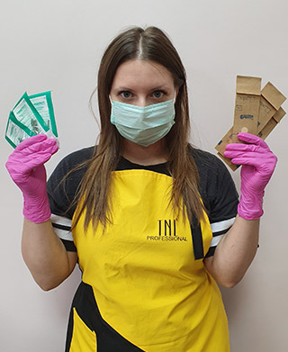

Стерилизация и дезинфекция

Сейчас это одна из самых волнующих тем, как для мастеров, так и для
клиентов. Никто не
хочет
заработать
грибок или инфекцию.
И так, разберём подробнее, как происходит дезинфекция и стерилизация с соблюдением СанПиН. Обработка
инструмента
проходит в
три этапа:
1 этап - Дезинфекция.
На этом этапе происходит предотвращение распространения и удаление патогенных
микроорганизмов, являющихся источниками возникновения сибирской язвы, холеры, ряда кишечных и вирусных
инфекций. Проводится этот этап очень просто. Для начала, я развожу дезраствор в соответствии с
прилагаемой инструкцией. Затем полностью погружаю рабочий инструмент
в этот раствор на некоторое время (для каждого раствора свое время вымачивания, но
в среднем у меня на это уходит 15 минут).
2 этап - Предстерилизационная обработка инструмента.
Сначала специальной щёточкой инструмент очищается от налипшего материала и кожного покрова в растворе,
затем под проточной водой, так же все эти действия можно провести в ультразвуковой
мойке (джакузи для инструмента). После промывки я выкладываю инструмент на салфетку для просушки.
3 этап - Стерилизация.
Окончательное уничтожение бактерий, грибков и вирусов выполняется
под действием высоких температур в сухожаровом шкафе (воздушный) или автоклаве (паровой). Я кладу сухой
инструмент в крафт-пакеты и отправляю в сухожар на один час при температуре 180°С.
Выполнив все эти несложные действия, я уверена в безопасности инструмента для меня и моих
клиентов, но
если у вас есть вопросы и пожелания вы всегда можете связаться со мной.